Taiwan 여행
일상으로 부터의 탈출일정 : 2019년 6월(5~9일)의 휴가
여행자 : SG 5Couples
대만으로의 휴가
새로운 출발을 위해 SG 다섯 커플이 3박 5일의 일정으로 대만으로 떠나게 되었다. Thank you.
첫번째 일정
타이페이 화련으로 아침일찍 조식을 마치고 기차로 2시간 30분의 긴시간을 이동한 끝에 화련의 태로각 협곡(장춘사, 연자구, 자모정)에서 자연의 경이로움과 원주민 생활상을 보았다 열대지역의 소나기도 경험 하고 이동하였다.
다음으로 칠성담 해변으로 이동 해변과 함께 현지인의 버스킹을 구경하고 다시 숙소로 이동 밤늦게 도착휴식
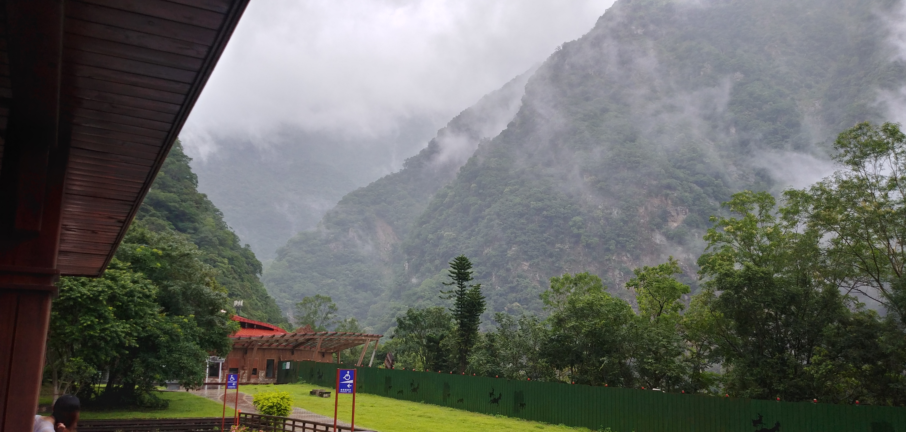
두번째 일정
스펀 천등 날리기로 소원를 적어 보내고 기암괴석의 국립야류 해상공원에서 드라마 영화 촬영지로 유명한 지우펀을 구경하고
도교사찰인 용산사에서 소원을 빌고 현지 시장구경으로 마무리
세번째 일정
101빌딩 전망대에서 타이페이 시내을 전망하고 세계4대 박물관을 열람하고 충렬사로 이동하여 위병교대식을 보고
마지막으로 스린 야시장을 구경하고 공황으로 이동 다음날 아침에 대구에 도착

Fun
재미롭거나 인상적인 것
화련 철도역 조형물
목재로 설치하여 부드러운 느낌이다

101층 마스코트
벌모양 인것 같은데

스린야시장 전경
전통 야시장의 화려함이 느껴진다
스린야시장에서
동영상을 눌러보세요. 움직이는 광고가 재미있다.
Gallery
3박 5일의 빡센 일정에도 불구하고 모두 피곤한 모습보이지 않고 여행을 즐겼다. 평소에 잘 찍지 않는 사진까지 모두 많이 찍었다
First Day

화련
칠성담 해변
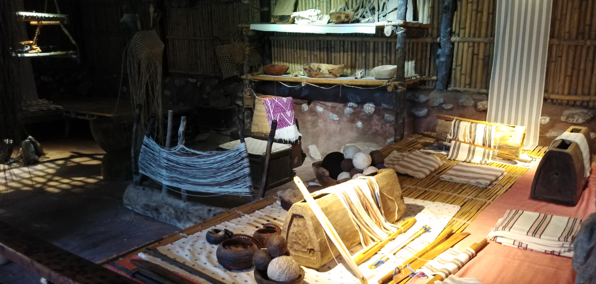
태로각협곡(화련)
원주민 생활주거
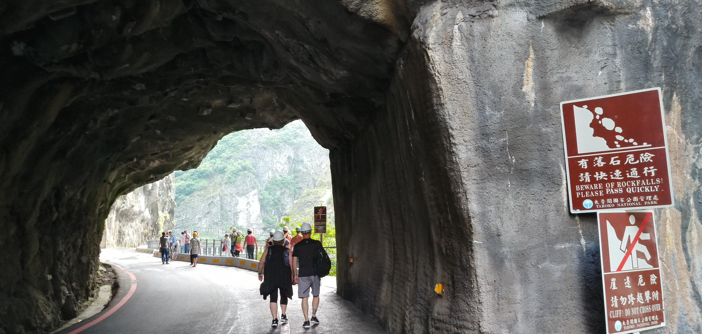
태로각협곡(화련)
전경
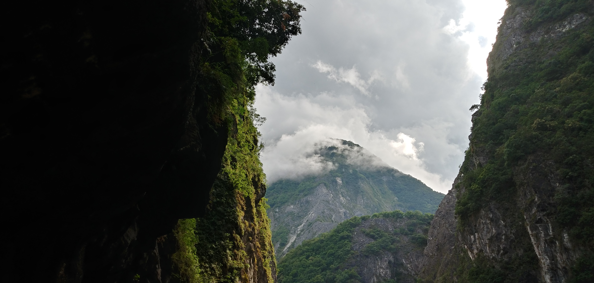
태로각 협곡(화련)
전경
Second Day
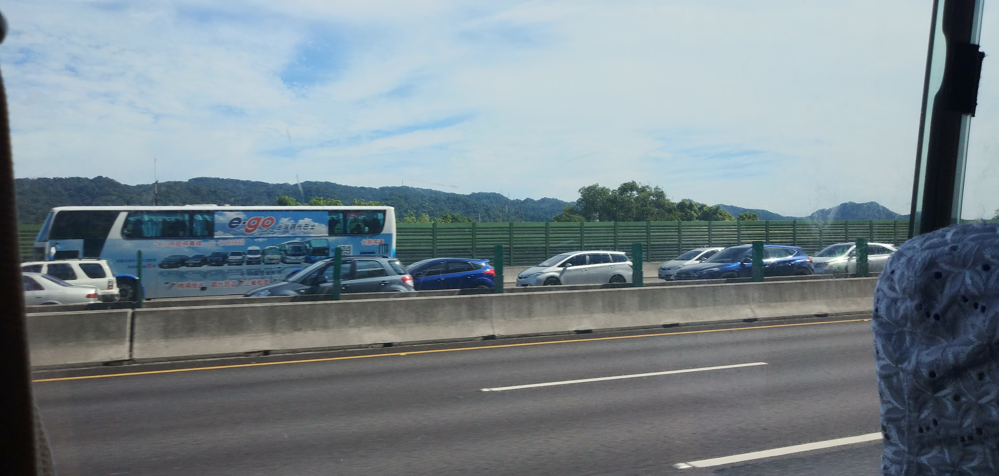
타이페이
명절이라 반대편 이동차량이 혼잡하다
스펀천등 날리기
소원을 적어 하늘로 날릴 준비중
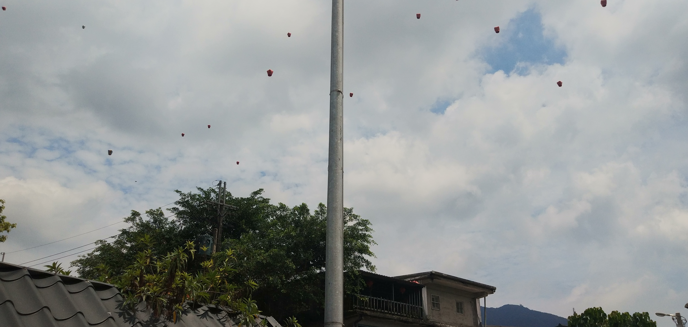
스펀천등 날리기
소원을 담고 하늘로 날아가는 천등
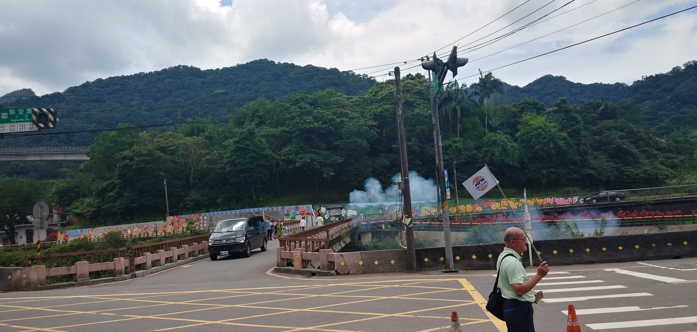
폭죽 터뜨리기
잡귀를 물리치는 행사라나?
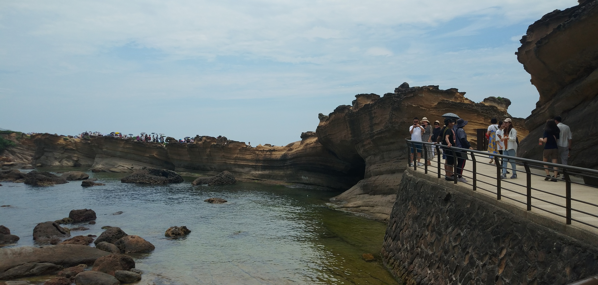
국립야류 해상공원
세월의 풍파에 침식되고 있으나 기암괴석이 수려하다
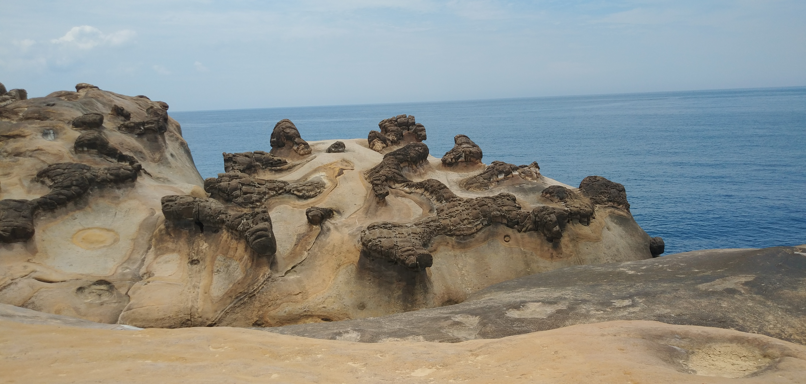
국립야류 해상공원
기암괴석
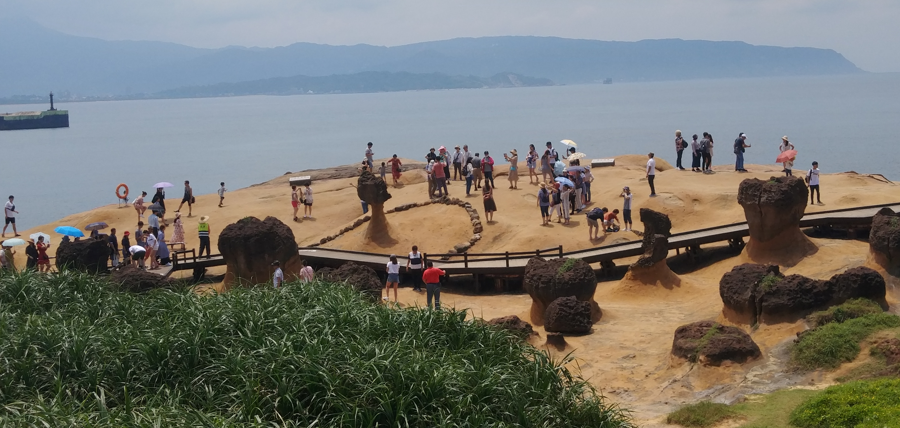
국립야류 해상공원
영국여왕 두상
국립야류 해상공원
세월의 풍파에 침식되고 있으나 기암괴석이 수려하다
지우펀
드라마, 영화촬영지로 유명
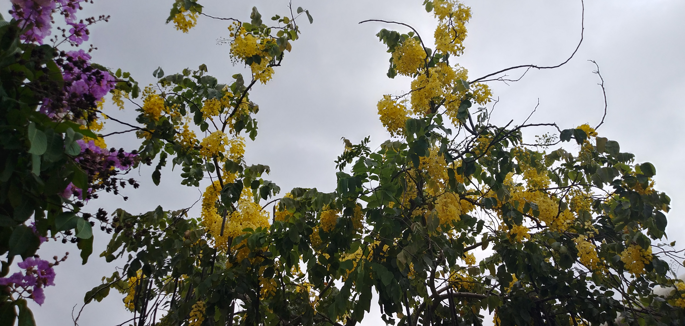
꽃의 아름다움
용산사 근처에서
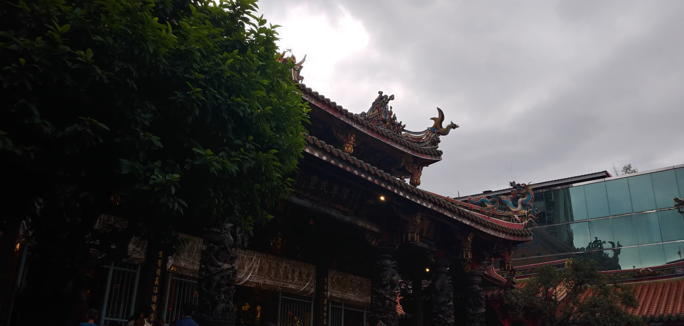
용산사
도교사찰
Third Day

101빌딩 모습
8자를 좋은 숫자로 여겨 8층씩 구분
101빌딩
전망대에서 본 타이페이
101빌딩
Wire 조형물
충렬사
위병교대식 장소
국립고궁박물관
특이한 공모양의 유물
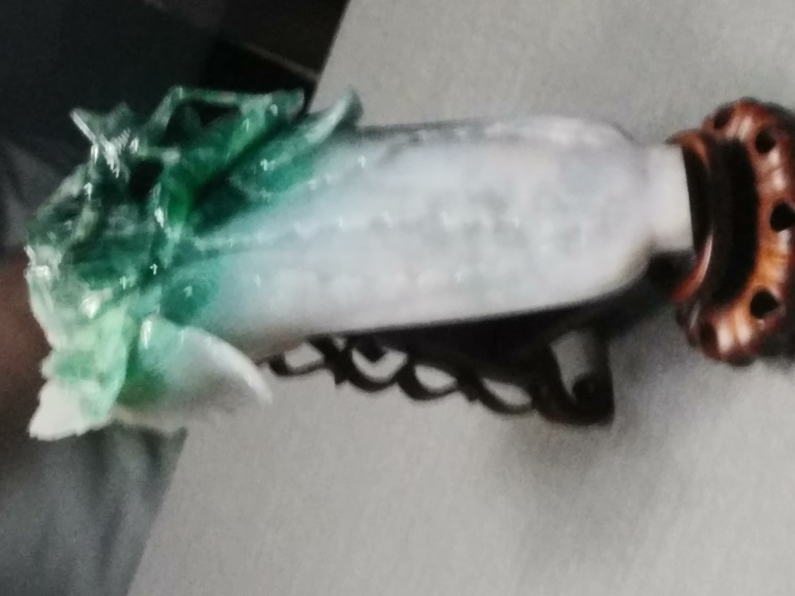
국립고궁박물관
옥으로 깍은 유물후기
5 Couples 모두 걱정과 달리 가리는 음식 없이 낙오자 없이 행복한 한때를 보내다 오다!!!
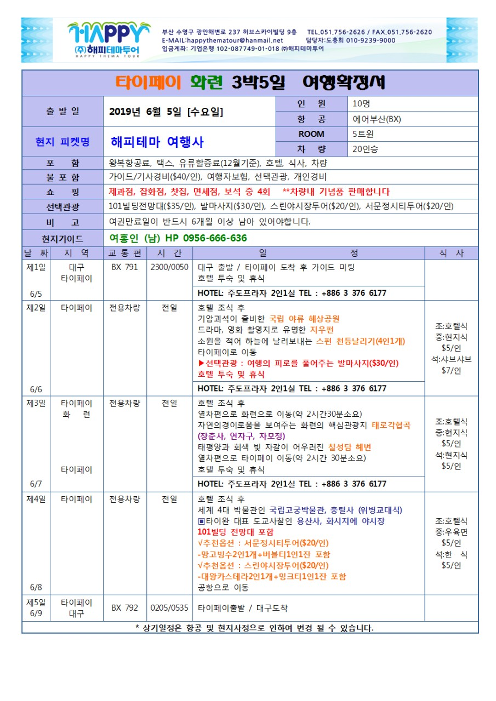
해단식 : 7월 6일 자금성에서